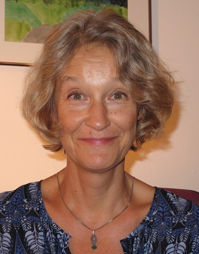

Herzlich willkommen auf meiner Homepage
Mein Name ist Olga Swerlowa und ich freue mich über Ihr Interesse für meine Arbeit.
Da ich nicht nur Germanistik und Pädagogik, sondern auch Fremdsprachendidaktik und Methodik studiert habe, ergeben sich daraus auch unterschiedliche Tätigkeitsbereiche. Diese Vielfalt bedeutet, dass ich für jeden der jeweiligen Bereiche Ideen und Methoden aus den anderen Bereichen schöpfen kann. Ich bin Autorin, Fortbildnerin und Lehrerin für Deutsch als Fremdsprache. Und das ist für mich eine gute Möglichkeit, vielfältige methodisch-didaktische Erfahrungen zu sammeln, die ich in meine Arbeit einbringen kann.
Auf dieser Homepage finden Sie viele Informationen über mich und meine Arbeit als Präsenz- und Online-Referentin und DaF-Autorin, zahlreiche Links zu meinen Lehrwerken und den Fortbildungen.
Gerne können Sie mich bei Fragen oder mit Anregungen kontaktieren.

Lernen mit Schwung: Bewegung im DaF-Unterricht
Wie kommt Bewegung in den Unterricht – und warum erleichtert das das Lernen? 18 Minuten auf Spotify.
Auf Spotify anhörenBELMA Award 2019